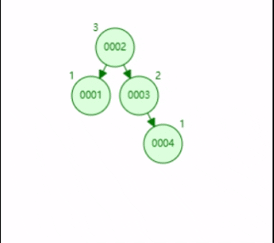

我们学校来这边的人还蛮少的呀，其实我蛮久以前就知道有这个网站了，只是一直忘记来这边写了， 哈哈哈哈，可惜我当时高考填志愿的时候还不知道有这个网站呜呜呜。 好的闲话不多说，正片开始，我们学校计算机类的分三个专业，1.计科，2.软工，3.智科。 我对于软工最熟悉，软工主要是分为c++和java两个方向，c++的话之后会学qt和嵌入式， java的话就是服务端开发那套，但是只靠学校教的，肯定是毕业就完蛋，在我们学校的计算机学生， 如果想入职计算机，靠技术吃饭，没个前百分之20机会就很少了。实验室还是蛮少的，大部分还是得靠自学。 学习氛围的话，如果你参加实验室，还是很好的，如果没有，那就难说了。 计科的话相对课程要少一点，而且感觉本科毕业比软工就业质量要差一点，但是考研考公可能更有优势吧。计科就不分方向了， 大家学的都一样，学得杂一些。 智科我了解不多，就不评价了。 说句中肯的话，我感觉我们学校的环境，只要你肯努力，还是能找到不错的工作的，但是如果你打算学计算机， 如果能去理工类院校，还是去理工类院校，如果能去东部城市，还是去东部城市， 除非你以后打算留在重 庆，否则我们学校谈不上同分最好的选择（分数还是有点虚高的）。
